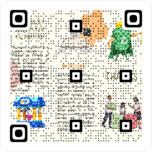

Piezas de la Máquina PETG
-
Pieza 1:
Ilustración 35. Figura 1 (Ilustración propia)
-
Pieza 2:
Ilustración 36. Figura 2 (Ilustración propia)
-
Pieza 3:
Ilustración 37. Figura 3 (Ilustración propia)
-
Pieza 4:
Ilustración 38. Figura 4 (Ilustración propia)
-
Pieza 5:
Ilustración 39. Figura 5 (Ilustración propia)
-
Pieza 6:
Ilustración 40. Figura 6 (Ilustración propia)
-
Pieza 7:
Ilustración 41. Figura 7 (Ilustración propia)
-
Pieza 8:
Ilustración 42. Figura 8 (Ilustración propia)
-
Pieza 9:
Ilustración 43. Figura 9 (Ilustración propia)
-
Pieza 10:
Ilustración 44. Figura 10 (Ilustración propia)
-
Pieza 11:
Ilustración 45. Figura 11 (Ilustración propia)
-
Pieza 12:
Ilustración 46. Figura 12 (Ilustración propia)
-
Pieza 13:

Ilustración 47. Figura 13 (Ilustración propia)
-
Pieza 14:
Ilustración 48. Figura 14 (Ilustración propia)
-
Pieza 15:

Ilustración 49. Figura 15 (Ilustración propia)
-
Pieza 16:
Ilustración 50. Figura 16 (Ilustración propia)
-
Pieza 17:
Ilustración 51. Figura 17 (Ilustración propia)
-
Pieza 18:
Ilustración 52. Figura 18 (Ilustración propia)
-
Pieza 19:
Ilustración 53. Figura 19 (Ilustración propia)
-
Pieza 20:
Ilustración 54. Figura 20 (Ilustración propia)
-
Pieza 21:
Ilustración 55. Figura 21 (Ilustración propia)
-
Pieza 22:

Ilustración 56. Figura 22 (Ilustración propia)
-
Pieza 23:

Ilustración 57. Figura 23 (Ilustración propia)
Armado de la estructura base
Posterior a esto, continuamos con el proceso de ensamblado, el cual tuvo lugar en 2 ubicaciones distintas: la casa de uno de los miembros del grupo (Guillermo Echeverría) y la unidad educativa. En la primera ubicación, se procedió a perfeccionar ciertos detalles de la impresión 3D en las piezas y a conseguir demás materiales que faltaban (tornillos y varas de metal).
Para perfeccionar los detalles de las piezas impresas, decidimos utilizar un taladro para poder remover ciertos fragmentos de plástico de la impresión, esto especialmente en piezas huecas o que tengan espacios para colocar demás componentes. Al final, se pudieron pulir sin problema las piezas.
Finalmente, se realizó la perforación de la boquilla que se iba a utilizar para el hotend, proceso que tampoco presentó complicaciones y el tamaño fue ideal para que el filamento salga sin ningún tipo de problema. Para esto, se adaptó una broca especial de un tamaño relativamente pequeño que sirvió por completo para el proceso.
En la segunda ubicación, siendo esta las aulas de clases, se procedió con el armado de la estructura que iba a encargarse de sostener el filamento, combinando las piezas de impresión 3D con otros materiales previamente conseguidos o enviados a hacer desde cero. Aquí fue donde la máquina comenzó a tomar forma.
Inicialmente, tuvimos que realizar el ensamblaje y unir las piezas impresas en 3D. Este proceso requirió precisión y atención constante a la hora del armado para garantizar que todas las partes encajaran de forma correcta y así conseguir crear una estructura firme y útil. Durante el proceso de armado hicimos uso de otros materiales, como lo son: playos, desarmadores y algunos distintos tipos de tornillos. En este caso, los tornillos usados nos ayudaron a asegurar que las partes estuvieran firmemente unidas y que la máquina fuera estable y, por lo mismo, funcional.
Proceso de ensamblado de las piezas
En este caso decidimos encargar la fabricación de varios tipos de tornillos a un tornero, ya que no estaban disponibles en tiendas, locales ni en ningún otro lugar. Inicialmente, el costo por cada tornillo fue de $5 debido a los gastos relacionados con el diseño personalizado. Sin embargo, debido a la cantidad de tornillos encargados, logramos reducir el costo a $2 por tornillo.
En total, se fabricaron 8 tornillos para la unión de las piezas mediante los mismos siendo estos 3 tornillos autorroscantes y 5 varillas roscadas hechas a medida para que encaje a los tamaños de las piezas impresas (apretados y/o asegurados con tuercas), también se utilizaron otro tipo de tornillos más comunes que no fueron necesario enviar a hacer a medida, para unir piezas que únicamente necesitaban ser atornilladas y de tamaño común el mercado:
- Tuercas M5 DIN 934
- Tornillos cabeza avellanada M3x12 DIN965
- Tuercas M3 DIN 934
- Tuercas ciegas M5 DIN1587
Empezamos con el armado de lo que vienen siendo las piezas base. Estas serían las piezas número 1 y 20. Estas se unen a las partes de los lados. Para asegurar la parte superior, se une con la pieza 3. Todo esto mediante tornillos de avance enviados a hacer a medida, con costo de $2 por cada uno y fabricados por un tornero.
Con esto, tenemos la estructura base, a la cual uniremos los engranajes en los huecos del lado de esta estructura siendo estos 3, el inferior, medio y superior, comenzando por colocar los rulimanes a los huecos de los lados de las piezas 1 y 20, todo esto aseguradores de plástico. Con los tornillos de avance, uniremos las piezas de los engranajes, encajando las mismas por los huecos de los lados, las cuales son las piezas número 8 y 17 siendo engranaje y asegurador, respectivamente. La pieza número 17 tiene el objetivo de asegurar el engranaje, siendo estos ubicados en la parte inferior de los encajes para los engranajes. Continuamos con el engranaje medio, el cual vendría siendo la pieza número 19.
Para que encaje todo con el engranaje inferior, colocamos la pieza número 10 del lado de dicho engranaje. Después de colocar el engranaje, procedemos a asegurarlo con la pieza 21. Todo esto colocado con los tornillos de avance, por supuesto. Continuamos con la última pieza, siendo el engranaje más grande que tiene la función de envolver el filamento. mediante los tornillos de avellana combinaremos las piezas número 9, 6 y 7, estas dos últimas colocadas a los lados respectivamente.
Para que este último engranaje encaje, colocaremos el asegurador del lado contrario del engranaje medio, el cual sería la pieza 11. Colocamos el engranaje mayor y continuamos con el último asegurador, siendo este la pieza número 18, todo esto colocado con los tornillos de avance y asegurados con tuercas, para poder insertar el motor en un lado del esquema base.
Para derretir el plástico para convertirlo en filamento hemos usado distintos materiales, siendo el cautín el material principal. Los otros materiales utilizados incluyen botellas de plástico, un soporte de madera, una bisagra de aluminio y nuestra boquilla previamente modificada. Lo primero que realizamos fue pasar el cautín por el medio de nuestras dos bisagras, consiguiendo así que las dos bisagras estuvieran juntas y el cautín dentro de las mismas. Tenemos que asegurarnos de que esta quede firmemente. Para asegurar esto, colocaríamos un tornillo que pasaría entre las dos bisagras de aluminio para así lograr firmeza.
Una vez hecho esto, lo siguiente que hacemos es colocar la boquilla en la bisagra, lo cual es un paso crucial. Es importante asegurarse de que esté correctamente alineada y fijada para garantizar que el filamento se extruya de manera uniforme y sin obstrucciones. En este caso, la boquilla usada fue previamente modificada.
Cuando teníamos todo esto listo, lo siguiente que hicimos fue colocar todo lo que hemos creado hasta el momento en uno de los lados de nuestra base de madera y proceder a fijarla. Esto lo hicimos mediante el uso de tornillos.
Para el proceso de ensamblaje de nuestro motor, que en este caso es el motor paso a paso NEMA, básicamente lo que tenemos que hacer es unirlo a la pieza número 5. En este caso, se utilizan cuatro tornillos de avellana para asegurar una unión firme y sólida. Este montaje permite crear un mecanismo de apertura y cierre manual para el motor, el cual sirve para desplazar el motor para cuando ya no se va a usar para la extracción de filamento. La turbina se une con la pieza número 14, mientras que el mecanismo de dirección, el cual nos permite generar un movimiento de izquierda a derecha, se compone y se vincula de las piezas número 12 y 15. Esta unión posibilita el control del mecanismo de apertura y cierre mediante un movimiento de izquierda a derecha manual.
En cuanto al circuito eléctrico, está compuesto por cuatro cables de colores: rojo, turquesa, azul y negro. La polaridad de estos cables determina el sentido de giro del motor, ya sea hacia la derecha o hacia la izquierda. La conexión del motor al condensador electrolítico permite invertir la polaridad según sea necesario. A su vez, el condensador está conectado a una fuente de alimentación de 110 voltios y 2000 amperios.
Para facilitar la conexión de todos los cables, se adquirió un enchufe que nos permite un montaje ordenado y eficiente.
Cortadora de Plástico Reciclable
Para su elaboración, empleamos los siguientes materiales:
- Una hoja de navaja de cúter
- Un bloque de madera de forma rectangular con un grosor considerable
- Varilla metálica
- Tornillo prisionero
- Arandela
- Serrucho
- Martillo
Comenzando con su elaboración, colocamos la navaja encima del bloque de madera. Con ayuda de un marcador, marcamos 4 puntos cerca del centro, pero cada uno tiene que estar guiado hacia las puntas para dejar un espacio en el centro. Una vez hecho esto, procederemos a perforar los 4 puntos con una profundidad baja usando un taladro. En la parte del centro, entre los 4 puntos, procederemos a marcar 3 líneas con una separación leve, las cuales, con un serrucho, procederemos a hacer cortes superficiales.
Con la pieza girada una sola vez en la parte lateral del rectángulo y siguiendo los leves surcos que le hicimos en la parte superior, nos guiaremos para hacer 3 líneas siguiendo esos surcos. Procederemos a marcar en el lado lateral 3 líneas yendo de mayor a menor, las cuales indicarán los 3 diferentes niveles que poseerá la cortadora. Una vez hechas las líneas, procedemos a hacer los cortes con un serrucho en la parte superior del bloque rectangular siguiendo las líneas de profundidad de las caras laterales, como se mencionó anteriormente. Después, procederemos a colocar la navaja encima y en el agujero que tiene la navaja en una de sus puntas, en el centro de este mismo, colocaremos un punto en el cual procederemos a taladrar de un lado al otro del bloque rectangular.
Terminado este proceso, colocaremos a través de este agujero que hicimos una varilla fina que encaje de manera adecuada. Con esto, procederemos a colocar un tornillo prisionero el cual enroscamos en la varilla. Una vez hecho esto, con un martillo, le daremos golpes al tornillo una vez enroscado en la varilla para que se incruste en el bloque de madera rectangular. Una vez fijada la varilla en los 4 puntos que taladramos al inicio, colocaremos tornillos con una arandela debajo, la cual, una vez puesta la navaja debajo de estas, nos ayudará a fijarla. Una vez colocados los tornillos teniendo la navaja fijada entre los 4 tornillos, ya tendríamos nuestra cortadora de plástico lista para su funcionamiento con todo lo que es necesario, dándonos un corte preciso de 0,5 cm de alto en el corte, la medida necesaria para poder desempeñar nuestro objetivo.
Desarrollo de Proyecto Planteado por Grupo de Trabajo
Video publicitario general:
El video publicitario fue hecho en la plataforma de CapCut. Los videos que aparecen en la publicidad fueron sacados de YouTube y a la vez se colocó el video del funcionamiento de nuestra máquina para que así se pueda observar lo que hace. Pusimos frases que ayuden a concientizar a las personas, incluyendo así información sobre cuánto dura la botella de plástico en descomponerse, en que se puede convertir una botella de plástico, el beneficio de reducir la contaminación y el riesgo de calentamiento global así creando una impulsión a que se reciclen las botellas de plástico.
El video se puede observar en: Ver Video
Folleto:
El folleto fue realizado en Canva. Se eligió una plantilla que sea interesante ante la visualización de las personas, además se implementó información e imágenes que llamen la atención. La información fue seleccionada de páginas web que sean lo más interesantes posible, a la vez añadiendo información que concientice a las personas a reciclar como, por ejemplo:
- Las consecuencias.
- ¿Por qué debemos reciclar?
- ¿Qué es reciclar?
- ¿Cómo podemos reciclar?
- ¿Cuál es el fin de reciclar?
Todo el folleto se desarrolló de la manera más atractiva y entendible posible. Se puede visualizar mediante un enlace o un código QR.

Publicaciones y videos del tema:
Estos fueron hechos mediante plantillas de CapCut las imágenes que se encuentran en cada publicidad fueron sacadas de Google o hechas mediante IA, lo videos que se pueden apreciar fueron grabados al realizar los avances del proyecto. Cada video tiene diferentes significados, como:
- La publicidad del reciclaje se desarrolló para que las personas piensen y concienticen antes de contaminar, a su vez que sea el impulso que ayuden al medio ambiente.
- Los videos del proyecto fueron hechos con el fin de que vean como se desarrolló la máquina. Cada video contiene creatividad, diversión, avances y demuestra el trabajo en equipo que hemos tenido a lo largo de todo el proyecto.
Imágenes publicitarias:
Dichas imágenes se realizaron mediante Canva, con aportes sacados mediante IA y Google. Se han utilizado plantillas propias de Canva. Las publicidades tienen contenido relacionado al reciclaje y la contaminación, por ejemplo:
- ¿Qué es la contaminación?
- ¿Cómo se puede evitar?
- Frases que incentiven al reciclaje.
- ¿Por qué debemos reciclar?
- ¿Qué significan las 3R?
- ¿Cuál es el propósito de reciclar?
Resultados Obtenidos
Los resultados obtenidos fueron buenos debido a que se logró conseguir filamento a partir de botellas de plástico. La máquina de filamento, aunque con pequeños contratiempos se consiguió armar y hacer funcionar. El proyecto a lo largo de su desarrollo tuvo varios giros por problemas económicos y la complejidad del desarrollo de ciertos circuitos para la máquina, pero, aun así, se logró armar de manera eficaz la máquina de filamento la cual funciona de manera correcta.
La parte giratoria de la máquina coordina eficientemente los movimientos con el motor paso a paso, lo que permite que al momento de sacar el plástico con un playo y se amarre al engranaje principal, el mismo se vaya enrollando y extrayendo de la botella de plástico a través del movimiento y el calor del cautín, que es otra de las partes dentro de la máquina de filamento, la misma que resulto en una forma más eficiente para extruir y derretir el plástico, con la bisagra unida a la boquilla, y se obtiene un resultado similar al de una unidad calefactora ENDER. Gracias a la medida de la boquilla es que se logra que el plástico salga con medida para la impresora 3D y de esta manera logramos obtener Filamento a partir de botellas de plástico, lo que representa un buen punto para nuestra campaña de reciclaje.
En cuanto a la campaña de reciclaje, se desarrolló un video promocional publicado en la plataforma de YouTube se han obtenido las siguientes métricas:
Aunque no se ha logrado un gran alcance se espera que con el tiempo el algoritmo de YouTube recomiende mayormente nuestro video por la promoción dada en redes sociales y se espera que se conozca a un público mayor.
Los folletos han tenido un mejor alcance, pero no se puede mostrar métricas debido a que Canva no dispone de dicha opción. De todas maneras, la alternativa de usar códigos QR en vez de papel ha resultado en un recibimiento positivo por parte del público, quienes consideran que esta es una opción eco-friendly y funciona perfectamente para la campaña y el objetivo de nuestro proyecto.
Conclusiones
Respecto a las conclusiones, podemos mencionar que logramos obtener excelentes resultados en todos los ámbitos relacionados al proyecto, destacando la correcta finalización de la estructura de la máquina productora de filamento, así como sus relacionados (cortadora de botellas y cautín modificado). Además, el hecho de que la máquina sea capaz de producir filamento correctamente significa un gran paso para nuestra campaña de reciclaje, de la cual tenemos contenido cargado en YouTube.
Cabe aclarar que a pesar de finalizar correctamente el proceso se presentaron una variedad de contratiempos, especialmente relacionados al apartado económico del proyecto y a la poca o nula disponibilidad de componentes requeridos, problemas de logística en conseguir materiales o directamente la inexistencia actual de estos mismos, llevando a retrasos en los procesos planteados, problemas de sobreprecios, etc. Esperamos que estas situaciones no se vuelvan a presentar mediante la correcta organización dentro del grupo de estudiantes y también dentro del planteamiento del proyecto previo a la socialización a los estudiantes.
Recomendaciones
- Desarrollo de productos innovadores: Uno de los productos innovadores es la creación de exoesqueletos para personas con discapacidad, el mismo ayudando al usuario a realizar cualquier tipo de necesidad o actividad.
- Impacto social positivo: Nuestro proyecto permitirá la creación de prótesis para cualquier tipo de persona con discapacidad la manera en la que impacta esta forma de crear una prótesis es en la economía ya que tendría las mismas funciones que un producto realizado con herramientas y moldes que poseen precios muy elevados.
- Personalización y satisfacción del cliente: Realizar cualquier tipo de producto que necesite ser fabricado por nuestra máquina de filamento el cual será personalizado y exclusivo para el cliente así tratando de satisfacer al mismo.
- Promoción de la innovación tecnológica: Nuestro proyecto se puede asociar a cualquier entidad que tenga una idea de innovación y en el cual quiera incluir la impresión 3D.
Bibliografía
- Improto 3D. (2024, 11 febrero). Filamento de plástico reciclado opción sostenible para imprimir en 3D.
- Creador de filamento 3D con botellas de plástico | Ecofilamento3d. (s. f.). Ecofilamento3d.
- Zendesk. (2023, 14 septiembre). ¿Cómo hacer la misión y visión de una empresa? [6 PASOS].
- Robert SA. (2019, 20 de noviembre). PetPull - cтанок для производства филамента из PET бутылок.
- PKINC TALLER. (2022, 4 de noviembre). COMO HACER FILAMENTO PET DE BOTELLAS CON UN CAUTIN FILAMENTO PET SUPER FACIL.
- Zneipas. (2022, 20 de enero). Станок протяжки пластика! Самая подробная инструкция по сборке PETPULL2.
- Equipo editorial. (s/f). Beneficios de reciclar.
- Caballero, D. (13 de diciembre de 2023). Tipos de filamentos para impresora 3D.
- Fuentes, A. (11 de septiembre de 2022). Filamentos para impresora 3D: Qué son y para qué se usan.
- Alonso, R. (2024). Conoces las impresoras 3D pero, ¿sabes cómo funcionan en realidad?.
- García Acevedo, C. A. (2015). Diseño de una extrusora para filamento de impresión 3D.
- Anonimo. (17 de octubre de 2022). Usos y ventajas de la impresión 3D.
- Solorzano, P., & Peare, J. (2018). Diseño de una máquina recicladora orientada a la producción de filamentos de plástico ABS para la impresión 3D en la PUCP.
- Gutiérrez Paredes, C. A., & Vargas Ayala, L. E. (2017). Diseño y fabricación de una máquina extrusora para crear el filamento de la impresora 3D a partir de material plástico.
- Servitec. (2017). Tipos de impresoras 3D que existen y sus principales usos.
- C, L. (23 de julio de 2019). ¿Qué tan “ecológico” es realmente el filamento PLA?.
- Mastoner. (2021). Todo sobre filamento PLA para impresión 3D.
- Anónimo. (23 de febrer de 2023). Tecnología de impresión 3D: ¿cómo ayuda al cambio social?.
- Anónimo. (26 noviembre de 2023). Impresión 3D y Ecología.